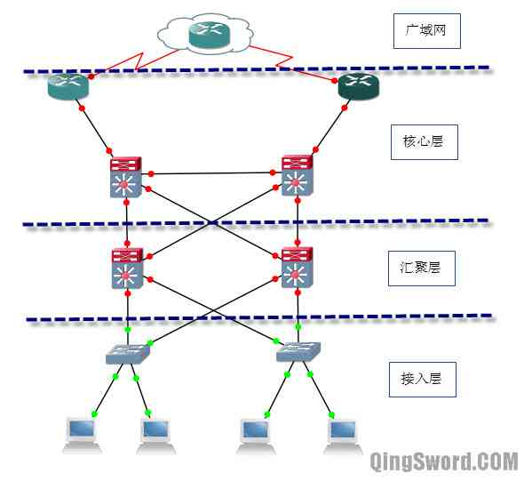
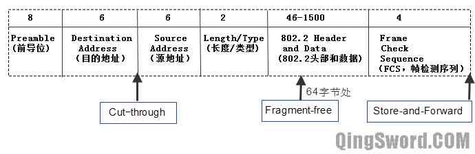
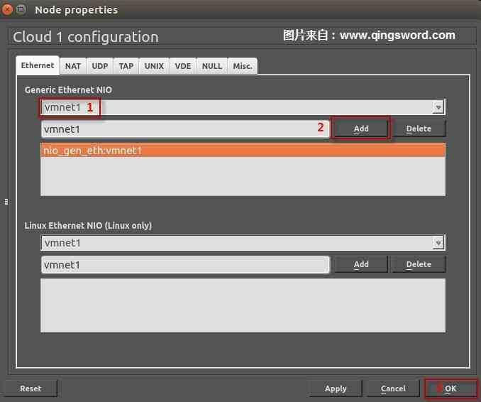
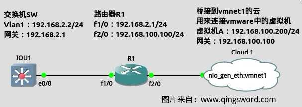
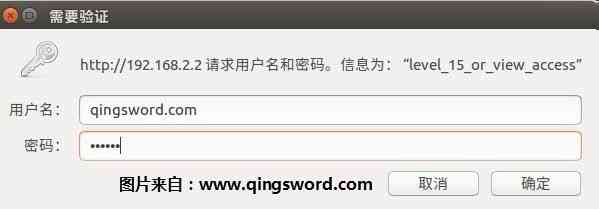
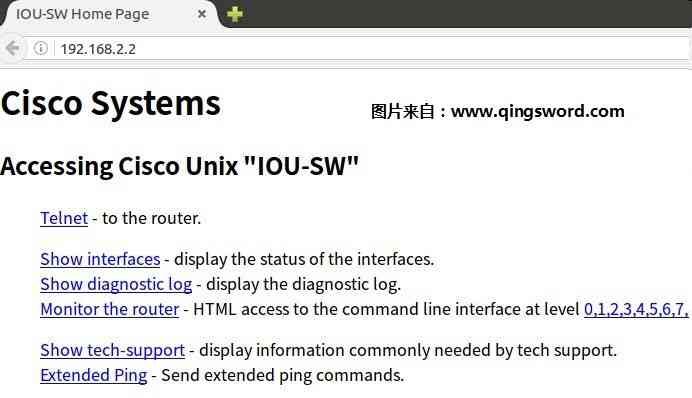

[CCNA图文笔记]-19-交换机基础
引言
这篇文章主要介绍Cisco分层体系构架、交换机分类、基本的配置命令、远程登录配置。
文章目录
0×1.典型网络分层设计
典型的网络分级设计模型将网络分为三层：
接入层（Access）：接入层负责接入终端设备，比如打印机、计算机、IP电话等。一般在接入层实现冲突域的隔离、Vlan的划分和交换机的端口安全等。
汇聚层（Distribution）：该层位于接入层和核心层之间，主要作用是实现VLAN间的通信、广播域的划分以及网络策略的定义等。
核心层（Core）：核心层的最主要作用就是快速转发。
典型网络三层设计模型如下图（图1）：
0×2.交换机分类
按型号分类：
固定配置交换机：不可扩展型，比如交换机上只有24个端口，那么就是24个端口，不可后期添加模块。
模块化交换机：可扩展型，通常有不同大小的机箱，以便安装不同模块化线路卡，可以通过添加不同的模块给交换机增加不同的功能。
可堆叠交换机：可堆叠交换机可以通过一根背板电缆将两台可堆叠交换机连接起来，就好像是一台交换机一样。用堆叠线连接的多台交换机只有一个MAC地址表，只需要一次MAC查询。
按转发方式分：
储存转发（Store-and-Forward）：交换机接收数据时，将数据储存在本地缓存中，直到接收了完整的帧后，再转发。
快速转发（Cut-through）：交换机接收数据的前14个字节即开始转发，因为前14个字节已经包含了目的的MAC地址。
无碎片式转发（Fragment-free）：接收数据的前64个字节后立刻转发，因为大多数的错误和碰撞都发生在前64字节，也就是说大多数的错误帧都小于64字节。
交换机转发方式示意图（图2）：
按对称性分：
对称式交换机：交换机所有端口的速率都一样；这种交换机多用在Peer-To-Peer(终端到终端)网络中。
非对称式交换机：交换机的端口速率不一样，比如少数几个速率是1000Mb/s，而多数端口速率是100Mb/s；多用在C/S（客户端/服务器）网络中。
按缓存方式分：
基于端口内存缓冲：内存是基于每个端口分配的，每个端口有固定的缓存空间用来储存数据。
基于共享内存缓冲：内存是被每个端口共享使用的，可以根据每个端口的使用情况动态调整。
按功能层分：
二层交换机。
三层交换机。
0×3.交换机远程登录与Web管理
思科交换机的硬件组成和路由相似，CLI下的命令也基本一致，下面来模拟一下交换机的远程登录。
如果是按照本系列文章第六篇中那样设置的GNS3，在下面的实验开始之前，请先手动启动IOU虚拟机，现在开始需要用到IOU虚拟机中的交换机IOS了，另外请自己安装另外一台虚拟机，本例将这台虚拟机简称为A，系统随意，然后将A的网卡模式设置成"Host-Only"即"仅主机"，本例使用的是ubuntu系统，如果是使用的windows系统，那么你应该会手动指定IP地址和默认网关，只要有这些基础知识，就足够了。
启动IOU虚拟机和A后，启动GNS3，拖动"Cloud"到工作区，用来桥接到vmnet1网卡，这个"Cloud"就是GNS3中的路由器或交换机和A通信的桥梁；如果将vmnet1网卡想象成一台独立的"交换机"，所有VMware中的虚拟机只要使用"Host-Only"网卡模式，就等于是连接到了这台交换机上，而GNS3中的"Cloud"只要桥接到vmnet1，就相当于在vmnet1这台"交换机"上添加了一个接口，所有GNS3中的设备只要连接到"Cloud"这个接口，就等价与连接到了vmnet1这台"交换机"上，就能够与同样连接在vmnet1这台"交换机"上的其他VMware虚拟机通信，只要他们的IP都被配置在同一个网段中。
对工作区中的"Cloud"右击选择菜单中的"Configure"，按照下图（图3）设置，添加vmnet1接口：
添加一台IOU交换机和一台c3640路由器到工作区，按照下图（图4）所示连线：
R1配置：
R1#conf t R1(config)#no cdp run R1(config)#int fa 1/0 R1(config-if)#ip add 192.168.2.1 255.255.255.0 R1(config-if)#no shut R1(config-if)#int fa 2/0 R1(config-if)#ip add 192.168.100.100 255.255.255.0 R1(config-if)#no shut R1(config-if)#end
IOU1交换机配置：
IOU1-Switch#conf t /*关闭路由功能*/ IOU1-Switch(config)#no ip routing /*只有关闭了路由功能配置默认网关才能生效*/ IOU1-Switch(config)#ip default-gateway 192.168.2.1 /*配置特权密码*/ IOU1-Switch(config)#enable secret 123456 /*在vlan1上配置管理ip*/ IOU1-Switch(config)#int vlan1 IOU1-Switch(config-if)#ip add 192.168.2.2 255.255.255.0 IOU1-Switch(config-if)#no shut IOU1-Switch(config-if)#exit /*开启远程管理线路0~4，并设置连接密码用于登陆*/ IOU1-Switch(config)#line vty 0 4 IOU1-Switch(config-line)#pass 123456 IOU1-Switch(config-line)#login IOU1-Switch(config)#end
VMware中的虚拟机A配置：
/*本例使用ubuntu系统，如果是windows系统的虚拟机，请自己在图形界面按照上面的拓扑图手动设置IP和网关*/ /*配置ip，ens36为网卡名称*/ www@qingsword.com:~$ sudo ifconfig ens36 192.168.100.200 netmask 255.255.255.0 /*配置默认网关*/ www@qingsword.com:~$ sudo route add default gw 192.168.100.100
测试虚拟机A telnet IOU1交换机：
/*如果使用Windows系统请打开cmd输入下面的telnet命令*/ www@qingsword.com:~$ telnet 192.168.2.2 Trying 192.168.2.2... Connected to 192.168.2.2. Escape character is '^]'. User Access Verification Password: /*输入vty连接密码*/ IOU1-Switch>en Password: /*输入特权密码*/ IOU1-Switch# /*成功登陆到交换机中*/ IOU1-Switch#exit /*退出登录*/
在虚拟机A上使用路由追踪命令：
/*Windows用户可以直接使用tracert命令，通过路由追踪命令查看数据在网络中每一个接收节点的IP*/ Win-PC>tracert 192.168.2.2 Tracing route to 192.168.2.2 over a maximum of 30 hops: 1 32 ms 31 ms 31 ms 192.168.100.100 2 62 ms 50 ms 63 ms 192.168.2.2 Trace complete. /*Ubuntu有一个类似的命令traceroute，默认没有安装这个命令，需要先安装才能使用（安装可能需要调整虚拟机A网卡的连接方式为桥接，请根据自己的网络调整）*/ www@qingsword.com:~$ sudo apt-get install traceroute www@qingsword.com:~$ traceroute 192.168.2.2 1 192.168.100.100 0.430 ms 0.533 ms 0.516 ms 2 192.168.2.2 62 0.630 ms 0.133 ms 0.213 ms
在虚拟机A上使用Ping命令Ping 交换机的VLAN1接口：
www@qingsword.com:~$ ping 192.168.2.2 PING 192.168.2.2 (192.168.2.2) 56(84) bytes of data. 64 bytes from 192.168.2.2: icmp_seq=1 ttl=254 time=90.1 ms /*可以看到ttl=254，说明其间经过了一台路由，这和拓扑一致*/
另外，交换机除可以通过命令行远程管理之外，还能通过Web方式远程管理（在浏览器中输入交换机管理IP即可），可以用下面的命令开启思科交换机的Web管理：
/*开启Web管理*/ IOU1-Switch(config)#ip http server /*用于连接Web管理的用户名和密码，本例用户名是"qingsword.com"，密码是"123456"，Web管理账户必须设置成特权等级15才能登陆Web页面*/ IOU1-Switch(config)#username qingsword.com privilege 15 secret 123456 /*使用本地验证*/ IOU1-Switch(config)#ip http authentication local IOU1-Switch(config)#end /*如果想关闭Web管理*/ IOU1-Switch(config)#no ip http server IOU1-Switch(config)#no username qingsword.com IOU1-Switch(config)#no ip http authentication local
开启Web管理后，在虚拟机A上打开浏览器输入"192.168.2.2"，将会看到下面（图5）的验证窗口，输入上面创建的特权用户名和密码，就登陆到了交换机的Web管理页面了（图6），Web页面管理用得并不多，大家了解一下就可以了：
 